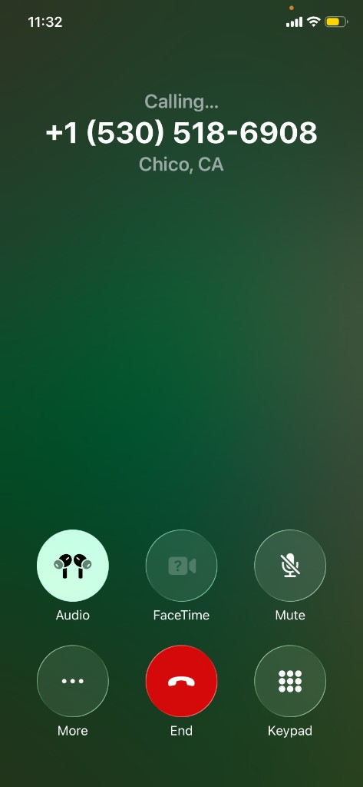
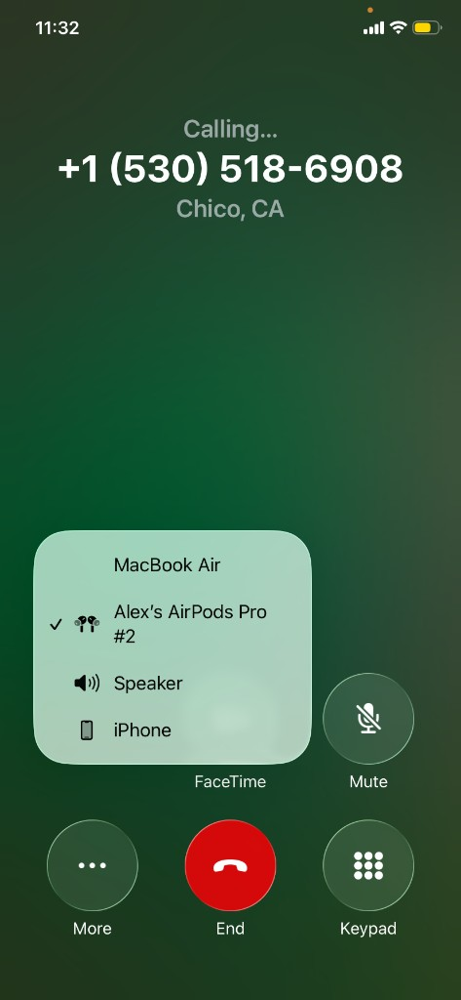

User eXperience Journal
Why Does My Phone Always Forget I Want Speaker?
The Interaction

Here is the scenario I keep living, step by step. My AirPods are still paired from earlier, but they are sitting on my desk in the case (or they are in the room, not in my ears). A family member calls. My goal is simple: answer on speaker so I can walk to the kitchen while we talk. I swipe to answer the way I always do. The call connects, I lift the phone to my ear out of habit, and I hear silence—or a tiny far-away sound—because the audio already went to the AirPods I am not wearing. The caller says “hello?” twice while I scramble: I tap the in-call Audio control, pick iPhone or Speaker from the sheet, then apologize and ask them to start again.
The explicit problem is not “Bluetooth is annoying.” It is that iOS chooses a call audio route for me based mainly on what was last connected, routes it to hardware I am not actually listening through, and does not confirm that choice before I commit to answering. I pay the cost in the first ten seconds of almost every call: social awkwardness, repeated micro-interruptions, and the feeling that the phone ignored the way I always finish the same correction afterward.
Which UX Principles This Breaks
One way to name what feels wrong is Nielsen’s heuristic visibility of system status: people should be able to tell what the system is about to do before it matters. On a call, “status” includes where the voice will play. I get almost no feedback—information returned about what the phone is doing—until after I have already answered. A small pre-answer indicator (“Audio: AirPods”) would at least let me fix the route before the other person starts talking.
The deeper clash is between my mental model—the story I tell myself about how my phone behaves—and the system’s real rule set, which designers call the conceptual model users are supposed to infer. My mental model is: “If I am holding the phone like a phone, and the buds are not in my ears, sound should come from the handset or speaker unless I say otherwise.” iOS’s conceptual model here is closer to: “Prefer the most recently connected Bluetooth sink.” Those two stories disagree, and because the system never surfaces its rule, I cannot align my expectations without getting burned first.
That ties to user control and freedom (another Nielsen heuristic): I need a dependable way to steer outcomes, not just recover from them. The audio sheet gives me control after the mistake, but there is no durable default—the path the product takes when I have not specified a preference—for “always start calls on iPhone/speaker.” That misses a chance for error prevention, Nielsen’s term for stopping mistakes before they happen. Wrong-route audio is a predictable, high-frequency slip; a smarter default or a pre-answer confirmation would prevent it instead of letting it repeat.
The Button I Shouldn't Have to Press
Once I am stuck in the wrong route, the in-call screen’s Audio button opens a small menu of outputs; a checkmark marks the active device. Below, the left screenshot is what I see immediately: AirPods already selected. The right screenshot is after I manually move the call back to the iPhone. Same two taps, same apology, same dance—call after call.

Steve Krug’s idea of satisficing fits what I do next: I do not hunt for a perfect long-term fix; I grab the first good-enough patch (switch audio, move on). In Don’t Make Me Think, he also describes muddling through—people stumbling forward with trial and error instead of reading manuals. That is me with this bug. I never filed a structured complaint; I just learned the tap sequence by repetition. The product trained me to cope instead of meeting my goal on the first try.
The Pattern It Never Learned
The part that makes the broken mental model sting is inconsistency with the rest of the OS. My iPhone clearly learns patterns elsewhere—Focus modes flip by time of day; Siri surfaces apps before I open them—so my expectation that it would notice “Nate always moves calls off the desk AirPods” is not magical thinking; it matches how Apple already sells the device. Applying that same adaptability to call audio would narrow the gap between my expectations and the phone’s actual conceptual model.
What Works
- Discoverability is fine: once I know the sheet exists, the labels are clear and the targets are big enough to hit under stress
- After the wrong default, recovering from the error is quick—few taps, no deep settings maze
How It Could Be Better
A stronger design would combine clearer visibility of system status (show the upcoming route on the incoming-call screen), a user-set default for call audio, and optional learning from repeated corrections so the system’s conceptual model matches real listening context—not just “last Bluetooth device connected.” That would respect user control and cut down the conversation-starting failures I described at the top.